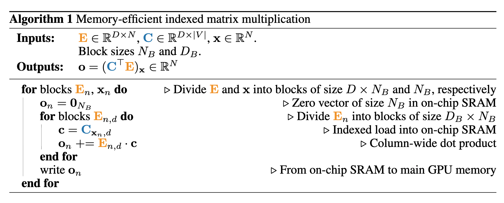

Cut Your Losses in Large-Vocabulary Language Models
We all want to save GPU memory and increase its utilization, right? This latest paper from Apple is exactly what we all need (apart from attention, of course!).
As we scale models, the vocabulary for these models will also grow (and we want to be in an ideal scenario). One side effect of this is that during the training, the memory footprint of the last layer/op responsible for cross-entropy calculation grows disproportionately. In the case of small models, the memory consumed in the final layer can be an order of magnitude higher than the memory consumption in the rest of the LLM combined. The authors propose Cut Cross-Entropy (CCE), a method that computes the cross-entropy loss without materializing the logits for all tokens into global memory.
A natural question to ask is that someone should have noticed this before, and it can not be the first one. Well, the answer is yes. Let me put it this way: Optimizing the quadratic cost of attention has been the main focus. We made a couple of improvements in that area, and now we are shifting to this. Though this is not the first time someone has implemented a similar idea (I will provide links to a few references later in this thread), I believe this is the first feature-complete implementation of this concept.
Preliminaries
Before discussing the idea presented in this paper, take a step back and look at some notations described below as a refresher.
- The LLM parameterizes an autoregressive distribution over all possible tokens xi ∈ V given the preceding N−1 tokens. V is our vocabulary.
- We can split the LLM into a “feature backbone” f: x1 … xi−1 → RD and a “classifier” C ∈ RD×|V|
- The softmaxk(v) produces the probability over all vocabulary entries from the unnormalized log probabilities (logits).
- At training time, the LLM maximizes the log-likelihood of the next token.
Cut-Cross Entropy
Cross-entropy loss can be written as a combination of two terms, as shown below. The first term is a combination of an indexing operation and matrix multiplication. The second term is a joint log-sum-exp and matrix multiplication operation.
Memory Efficient Indexed Matrix Multiplication
A naive computation of indexed matrix multiplication expressed in the first term above involves either explicit computation of the logits CTE with an O(N|V|) memory cost or indexing into the classifier Cx = [Cx1…..CxN] with an O(ND) memory cost.
To achieve better efficiency, the authors fuse the classifier indexing Cx with the consecutive dot product between columns Cxi and Ei in a single CUDA/Triton kernel.
- The kernel retrieves the value xi, the xi-th column from C, and the ith column from E and stores them in SRAM.
- Perform a dot product between the retrieved values and write the results to the global memory.
All the operations are performed in SRAM, and no GPU memory is allocated at any point. Also, the computations are performed block-wise for better GPU efficiency. The backward pass can be merged with the backward pass of the log-sum-exp operation, which will be discussed shortly.

Memory Efficient Linear log-sum-exp
Forward pass
- Uses an old trick of blocks and parallelization.
- Divide the output O = CTE ∈ R|V|×N into a set of blocks of size MB × NB.
- Retrieve the corresponding parts En of E with size (D × NB) and blocks Cm of C with size (D × MB) using independent CUDA blocks. Perform the inner product Onm = CTmEn along the dimension D.
- Loop over smaller size (DB X NB) and (DB X MB) blocks and accumulate Onm = Σd(CTmdEnd) in SRAM.
- Each CUDA block then writes Onm back into global memory.
- The same blocking and parallelization strategy is applied to produce log-sum-exp(CTE). Each block first computes a matrix multiplication, then the log-sum-exp (or LSE for short) along the vocabulary dimension m for its block, and finally updates log-sum-exp with its result.
- The authors use a spin-lock on an atomic operation in global memory to synchronize the updates by different CUDA blocks for simplicity.
Backward pass
- Needs two gradient updates. The gradient is defined as shown above.
- To calculate CTE, we can take the same approach used in the forward pass and can compute this in SRAM.
- Since softmax(CTE) = exp(CTE − LSE), we do not need to compute the normalization constant of the softmax, allowing us to reuse the global synchronization of the forward pass and compute the softmax efficiently in parallel.
- The authors implement the second matrix multiplication in the GPU memory as a blockwise implementation would require storing or synchronizing S.
- The authors use two techniques to improve the memory access pattern in this algo: gradient filtering and vocabulary sorting.
- Gradient filtering is necessary because when items are in bf16, any value below ε = 2e−12 will likely be ignored due to truncation in the summation or rounding in the normalization, directly affecting the softmax matrix. For any column in that matrix, at most 1/ε = 4096 entries have non-trivial values and contribute to the gradient computation. All other values are either rounded to zero or truncated. This sparsity increases with the size of the vocab. The authors exploit this sparsity and skip gradient computation for any block whose corresponding softmax matrix Snm has only negligible elements. A threshold of ε = 2e−12 is chosen as the smallest value for no truncation.
- Efficient gradient filtering depends directly on the block-level sparsity of the softmax matrix. Ideally, blocks should be empty (hence skipped) or populated entirely but not partially. The authors group the non-trivial gradients by ordering the tokens by their average logit. In the case of a forward pass, they achieve this using an atomic addition to compute the average logit per token. In the case of the backward pass, divide the vocabulary dimension |V| into blocks with similar average logit instead of arbitrarily.
Runtime And Memory
- Model: Gemma 2B
- Vocab size: 256, 000
- Hidden dim: 2,304
- Batch size: 8,192 tokens
Here are the results with different methods